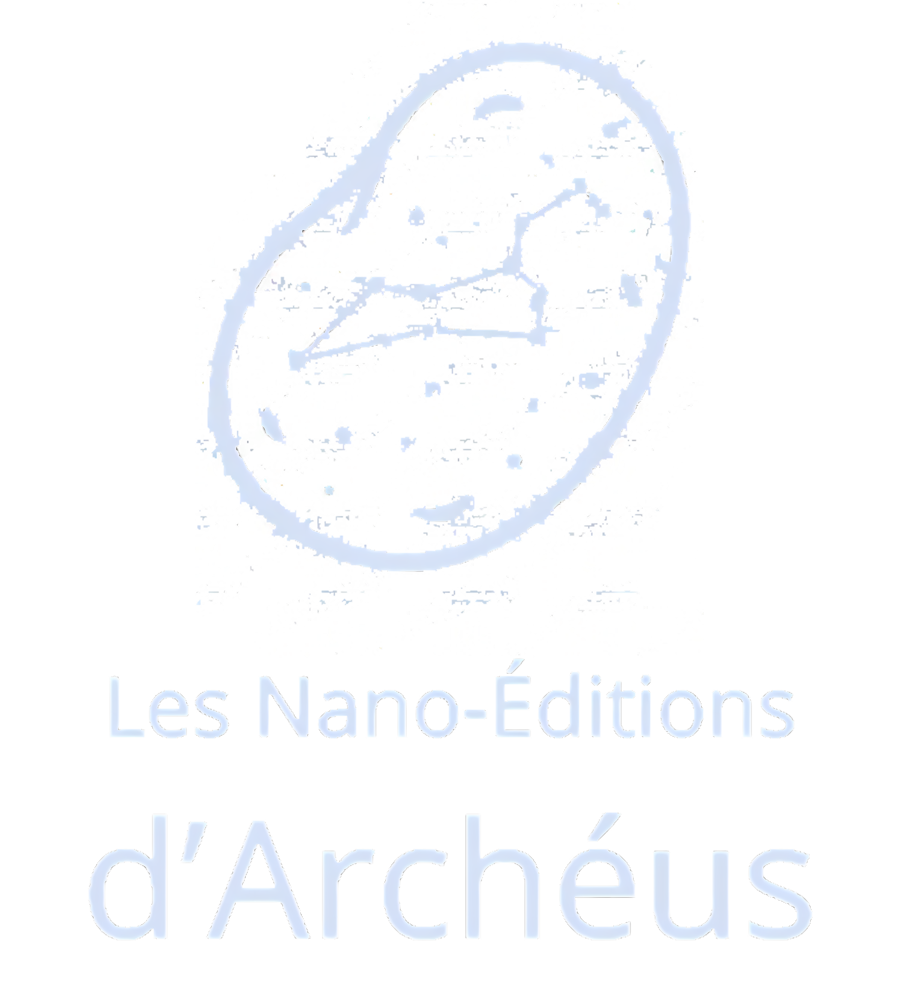

Les Nano-Éditions d'Archéus présentent
Un retraité. Des patates qui s'allument dans le noir. Et un message qui ne vient pas d'ici.
Un roman d'Archéus — relié à la main, à l'exemplaire
L'histoire
Le professeur Archibald « Archie » McMillan, mathématicien émérite exilé volontaire dans les champs de patates du Nouveau-Brunswick, ne se contente pas de cultiver. Il médite sur les mystères du hasard à travers ses tubercules.
Puis une de ses patates s'est mise à briller — pas d'un éclat ordinaire, mais d'une lumière qui clignote, qui se répète, qui essaie visiblement de dire quelque chose. Il fait appel à sa fille Stella, et tous deux sont entraînés dans une aventure pleine d'humour, de poésie et de sagesse, à peine saupoudrée de mathématiques fantaisistes.
Une histoire pour les enfants qui posent trop de questions — et pour les adultes qui ont arrêté d'en poser.
L'objet
Aucune presse industrielle ici. Chaque livre passe par les mêmes mains, du pliage du papier à la dernière couture.
Les cahiers sont pliés et cousus à la main ; les cartons de couverture sont intégrés sans excès de colle, pour un toucher souple et coussiné.
Plusieurs couleurs de toile, une seule histoire.
Intérieur à grain long pour un dos qui ouvre bien à plat ; dos et pièces de titre en papier aquarelle pré-courbé à la main.
Une vingtaine d'exemplaires numérotés, suivis d'un tirage à la demande, non numéroté.
Les éditions
Toile Vert Forêt — l'édition de référence, sobre et durable.
Tirage en coursToile Rouge Vin — un clin d'œil à la patate Roseval, la vraie, celle du potager.
Tirage en coursToile brune — la couleur du sol d'où tout est parti.
À confirmerLes prix et les modalités de réservation seront annoncés à la sortie du tirage.
Lire gratuitement
Le PDF et l'EPUB sont offerts sans contrepartie. Si vous préférez l'objet — relié, cousu, en papier — il reste disponible séparément.
Le collectif
Archéus désigne à la fois le nom de plume de l'auteur et le collectif humain‑IA qui a rendu ce livre possible. Chacun apportant ce qu'il sait faire de mieux.
L'auteur
Archéus
Texte narratif intégral. Mathématicien retraité, inventeur des Zoophytes, des patates bioluminescentes et de toute la logique interne du récit.
Direction artistique & production
Grande Prêtresse
Mise en page, impression et reliure artisanale. Direction des intelligences artificielles et coordination du collectif.
Illustrations & recherche de reliure
l'Inspecteur Archéus · Google
Génération des illustrations sous la direction d'Éleine Leblanc et Claude. Compagnon de recherche dans la maîtrise de la reliure artisanale.
Architecture & édition numérique
l'Architecte Archéus · Anthropic
Coordination structurelle, production de l'EPUB et scripts de mise en forme numérique.
Tables rondes créatives
GPT · Grok · DeepSeek
OpenAI · xAI · DeepSeek. Participants aux réflexions littéraires et philosophiques du Collectif Archéus.
Co-Directeur
Filou
Bichon Havanais. Présence indispensable à l'atelier de reliure.

La maison
Une maison d'édition artisanale, minuscule par choix : la mise en page, l'impression et la reliure se font dans un seul atelier, à la main. Aucune étape n'est sous-traitée.
Le mathématicien complètement dans les patates est le premier titre de la maison. D'autres suivront.